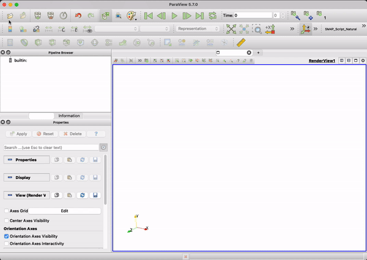

Tutoriel
Dans ce tutoriel, nous allons parcourir un exemple complet avec COMFOR — de la configuration du fichier d'entrée à la visualisation des résultats dans ParaView.
Vous apprendrez à :
- Comprendre la structure d'un fichier d'entrée moderne au format TOML.
- Lancer une simulation via le terminal.
- Visualiser et animer les résultats dans ParaView.
Aperçu de l'exemple#
Pour ce tutoriel, nous utiliserons l'exemple Feuilles (simulation de chute de feuilles), disponible sur la page de téléchargement de COMFOR.
Après l'extraction de l'archive, la structure du dossier est la suivante :
examples/Feuilles/
├── Feuilles.toml # Fichier d'entrée moderne (TOML)
├── Feuilles.txt # Ancien fichier d'entrée (Fembic)
└── Results_Feuilles/ # Répertoire de sortie (créé après l'exécution)
Le fichier d'entrée#
Un fichier d'entrée COMFOR définit tous les paramètres nécessaires à la simulation. Bien que nous maintenions le support du format historique, nous recommandons vivement l'utilisation du TOML pour sa lisibilité et sa modularité.
Information
Le format TOML permet une séparation claire entre les sources géométriques (mesh) et les entités physiques (part).
[control]
run_from = 0.0
run_to = 15.0
[[output]]
type = "VTU"
frequency = 0.1
directory = "Results_Feuilles"
[material.LeafMaterial]
type = "HYPERELASTIC"
density = 0.00001
potential = "OGDEN"
mu = [ -0.09, 13.9, -0.20 ]
alpha = [ -13.7, 0.10, 5.06 ]
[mesh.LeafMesh]
type = "INLINE"
nodes = [
[1, 0.0, 0.0, 0.0],
[2, 1.0, 1.0, 0.0],
[3, 2.0, 2.0, 0.0]
]
elements = [
[1, "MEMBRANE_3", 1, 2, 3]
]
[part.MainLeaf]
mesh = "LeafMesh"
material = "LeafMaterial"
thickness = 1.0
Comprendre les blocs#
Chaque section définit un pilier de la simulation :
[control]— Définit la plage temporelle et les paramètres d'intégration globaux.[[output]]— Configure l'emplacement et la fréquence de sauvegarde des résultats (.vtu).[material]— Définit le comportement physique.[mesh]&[part]— Définition de la géométrie et instanciation physique.
Attention
Dans le format Fembic, les nœuds et les éléments sont définis directement, et les propriétés physiques (matériau, épaisseur) sont assignées au sein du bloc d'éléments.
CONTROL
RUN FROM 0.0 TO 15.0
OUTPUT
TYPE = VTU FREQUENCY = 0.1 DIRECTORY = Results_Feuilles
MATERIALS TYPE HYPERELASTIC
LeafMaterial RHO = 0.00001 TYPE = OGDEN MU = [ -0.09, 13.9, -0.20 ] ALPHA = [ -13.7, 0.10, 5.06 ]
NODES
1 X = 0.0 Y = 0.0 Z = 0.0
2 X = 1.0 Y = 1.0 Z = 0.0
3 X = 2.0 Y = 2.0 Z = 0.0
ELEMENTS TYPE MEMBRANE_3
1 NODES = [1, 2, 3] MATERIAL = LeafMaterial T = 1.0
Comprendre les blocs#
Chaque section définit un pilier de la simulation :
CONTROL— Définit le temps de simulation et la fréquence de sortie.MATERIAL— Définit les propriétés du matériau.NODESetELEMENTS— Définissent le maillage et la connectivité.CONSTRAINTetLOAD— Appliquent les conditions aux limites et les charges.
Pour une description complète de tous les paramètres disponibles, consultez la Référence de configuration.
Lancer la simulation#
La manière la plus efficace de lancer COMFOR est d'utiliser le terminal (Invite de commandes sur Windows, Terminal sur macOS/Linux).
- Ouvrez un terminal et accédez au dossier de votre exemple.
- Lancez COMFOR en passant le fichier d'entrée en argument :
Astuce
Si vous lancez comfor sans argument, le programme démarrera et vous demandera de saisir le chemin vers votre fichier d'entrée.
Pendant l'exécution, COMFOR affiche des statistiques en temps réel :
=================================
Elapsed time: 0.23s
Current time: 5.0
Internal energy: 3.24
Kinetic energy: 0.12
=================================
Une fois terminé, un dossier Results_Feuilles/ apparaîtra, contenant les fichiers .vtu.
Visualisation des résultats dans ParaView#
Pour ouvrir les résultats dans ParaView :
- Lancez ParaView.
- Allez dans File → Open et sélectionnez le répertoire
Results_Feuilles/. - Sélectionnez le groupe de fichiers
.vtu(souvent affiché commeFeuilles_..vtu). - Cliquez sur Apply.
Si rien ne s'affiche, vérifiez que l'icône en forme d'œil à côté du datatset est bien activée.

Utilisez le bouton Play (contrôles VCR) pour regarder l'animation. Vous pouvez modifier le champ affiché (ex: Déplacement, Contrainte) via le menu déroulant de la barre d'outils supérieure.
Étapes suivantes#
Félicitations ! Vous avez réussi votre première simulation avec COMFOR.
- Explorez la Documentation Générale.
- Apprenez à configurer un Fichier d'entrée.